目錄
1. 部分匹配交叉（Partially-matched crossover，PMX）
2.單點交叉（Single-point crossover）
7. 基於位置的交叉（Position-based Crossover，PBX）
8. 基於順序的交叉（Order-Based Crossover，OBX）
10. 子路徑交叉交叉（Subtour Exchange Crossover，SEX）
1. 部分匹配交叉（Partially-matched crossover，PMX）
部分匹配交叉保證了每個染色體中的基因僅出現一次，通過該交叉策略在一個染色體中不會出現重複的基因，所以PMX經常用於旅行商（TSP）或其他排序問題編碼。
PMX類似於兩點交叉，通過隨機選擇兩個交叉點確定交叉區域。執行交叉后一般會得到兩個無效的染色體，個別基因會出現重複的情況，為了修復染色體，可以在交叉區域內建立每個染色體的匹配關係，然後在交叉區域外對重複基因應用此匹配關係就可以消除衝突。
過程：
第一步，隨機選擇一對染色體（父代）中幾個基因的起止位置（兩染色體被選位置相同）
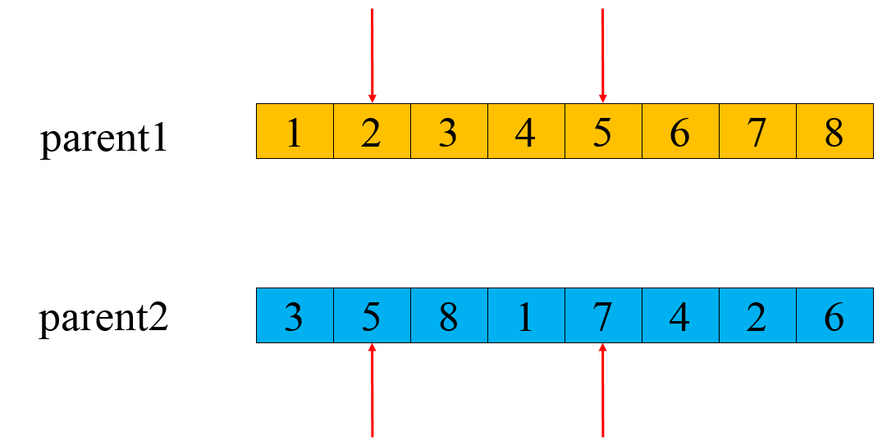
第二步：交換這兩組基因的位置。
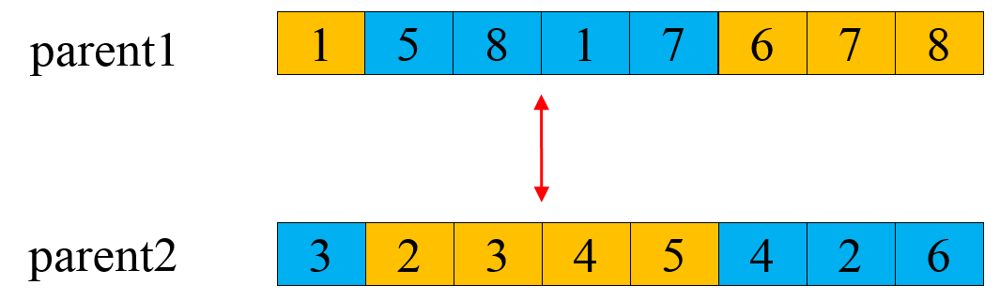
第三步：做衝突檢測，根據交換的兩組基因建立一個映射關係，如圖所示，以7-5-2這一映射關係為例，可以看到第二步結果中子代1存在兩個基因7，這時將其通過映射關係轉變為基因2，以此類推至沒有衝突為止。最後所有衝突的基因都會經過映射，保證形成的新一對子代基因無衝突。
最終結果為：
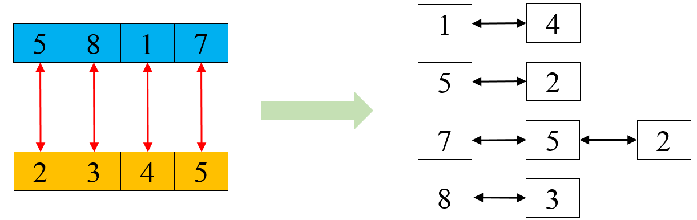
動畫效果如下：
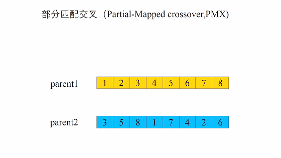
2.單點交叉（Single-point crossover）
單點交叉通過選取兩條染色體，在隨機選擇的位置點上進行分割並交換右側的部分，從而得到兩個不同的子染色體。單點交叉是經典的交叉形式，與多點交叉或均勻交叉相比，它交叉混合的速度較慢（因為將染色體分成兩段進行交叉，這種方式交叉粒度較大），然而對於選取交叉點位置具有一定內在含義的問題而言，單點交叉可以造成更小的破壞。
動畫效果如下：
3.兩點交叉（Two-points crossover）
兩點交叉是指在個體染色體中隨機設置了兩個交叉點，然後再進行部分基因交換。
過程：
1.在相互配對的兩個個體編碼串中隨機設置兩個交叉點；
2.交換兩個個體在所設定的兩個交叉點之間的部分染色體。
動畫效果如下：
4.多點交叉（Multi-point crossover）
多點交叉或稱廣義交叉，是指在個體染色體中隨機設置多個交叉點，然後進行基因交換。其操作過程與單點交叉和兩點交叉相類似。如果多點交叉只選擇了一個交叉點，那麼多點交叉就變成了單點交叉。
動畫效果如下：
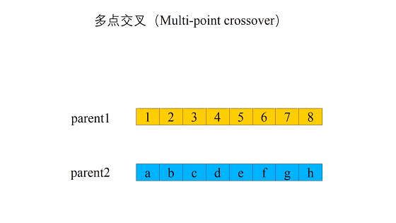
5. 均勻交叉（Uniform crossover）
均勻交叉也稱一致交叉，在均勻交叉中，兩個染色體的索引i處的基因以交換概率pS進行交換。經驗研究表明，均勻交叉比是一種更具利用性的方法，這樣可以更好地搜索設計空間，同時保持良好的信息交換。
動畫效果如下：
6. 順序交叉（Order Crossover，OX）
在兩個父代染色體中隨機選擇起始和結束位置，將父代染色體1該區域內的基因複製到子代1相同位置上，再在父代染色體2上將子代1中缺少的基因按照順序填入。另一個子代以類似方式得到。與PMX不同的是，OX不用進行衝突檢測工作（實際上也只有PMX需要做衝突檢測）。
過程：
Step1：與PMX相同，隨機選擇一對染色體（父代）中幾個基因的起止位置（兩染色體被選位置相同）。
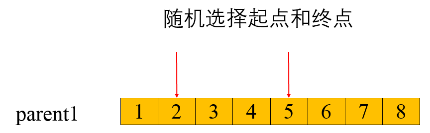
Step2：生成一個子代，並保證子代中被選中的基因的位置與父代相同。
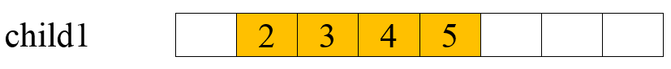
Step3：先找出第一步選中的基因在另一個父代中的位置，再將其餘基因按順序放入上一步生成的子代中。
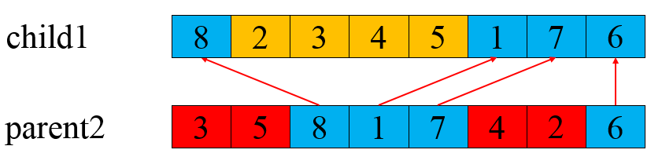
動畫效果如下：
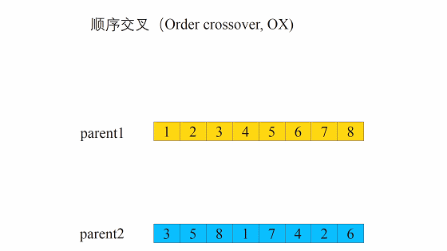
7. 基於位置的交叉（Position-based Crossover，PBX）
在兩個父代染色體中隨機選擇幾個位置，位置可以不連續，將父代染色體1這些位置上的基因複製到子代1相同位置上，再在父代染色體2上將子代1中缺少的基因按照順序填入。另一個子代以類似方式得到。PBX與OX的不同在於選取的位置可以不連續。
過程：
Step1：隨機選擇一對染色體（父代）中幾個基因，位置可不連續，但兩染色體被選位置相同。
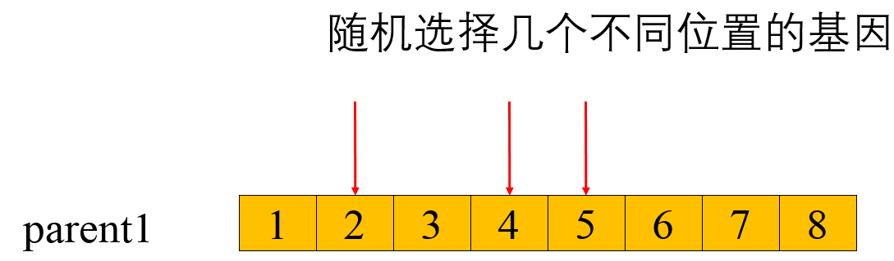
Step2：與OX的第二步相同，生成一個子代，並保證子代中被選中的基因的位置與父代相同。
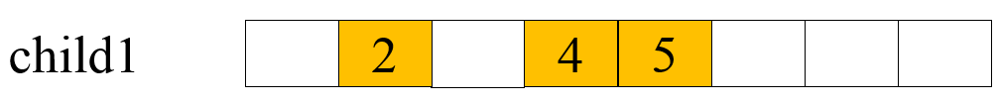
Step3：也與OX的第三步相同，先找出第一步選中的基因在另一個父代中的位置，再將其餘基因按順序放入上一步生成的子代中。
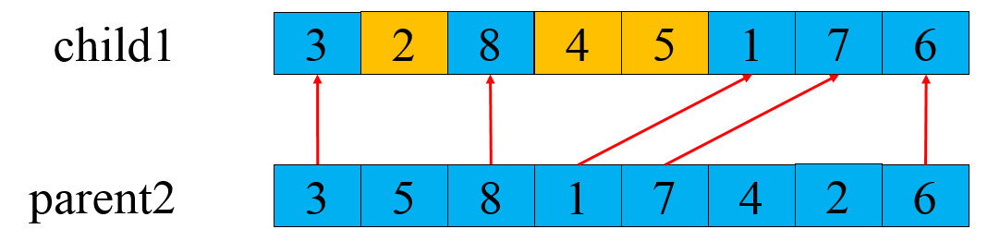
動畫效果如下：

8. 基於順序的交叉（Order-Based Crossover，OBX）
在兩個父代染色體中隨機選擇幾個位置，位置可以不連續，先在父代染色體2中找到父代染色體1被選中基因的位置，再用父代染色體2中其餘的基因生成子代，並保證位置對應，將父代染色體1中被選擇的基因按順序放入子代剩餘位置中。另一個子代以類似方式得到。OBX與PBX相比，生成子代的“基礎”基因來源不同，PBX來自被選中基因，OBX來自剩餘基因。
過程：
Step1：隨機選擇一對染色體（父代）中幾個基因，位置可不連續，但兩染色體被選位置相同。
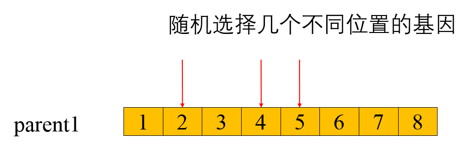
Step2：先在父代2中找到父代1被選中基因的位置，再用父代2中其餘的基因生成子代，並保證位置對應。

Step3：將父代1中被選擇的基因按順序放入子代剩餘位置中。

動畫效果如下：
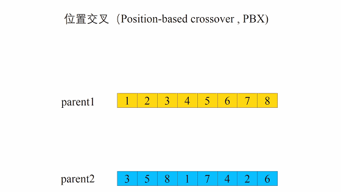
9. 循環交叉（Cycle Crossover，CX）
在某個父代上隨機選擇1個基因，然後找到另一個父代相應位置上的基因編號，再回到第一個父代找到同編號的基因的位置，重複先前工作，直至形成一個環，環中的所有基因的位置即為最後選中的位置。用父代染色體1中選中的基因生成子代，並保證位置對應，最後將父代染色體2中剩餘基因放入子代中。另一個子代以相同方式獲得。CX的特點在於只需要隨機選擇一個位置即可得到多個交叉位置。
動畫效果如下：
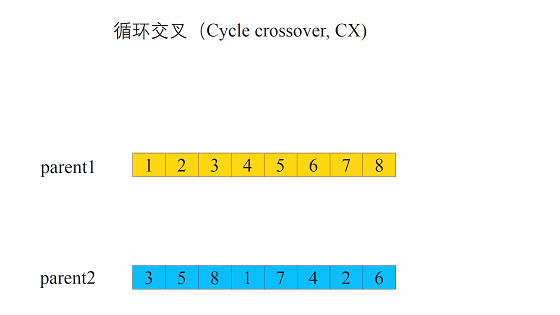
10. 子路徑交叉交叉（Subtour Exchange Crossover，SEX）
在某個父代上選擇1組基因，在另一父代上找到這些基因的位置，保持未選中基因不變，按選中基因的出現順序，交換兩父代染色體中基因的位置，一次生成兩個子代。SEX的特點是只在一個染色體上選擇基因的位置。
動畫效果如下：
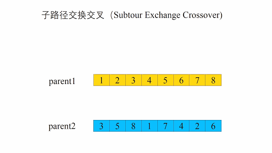